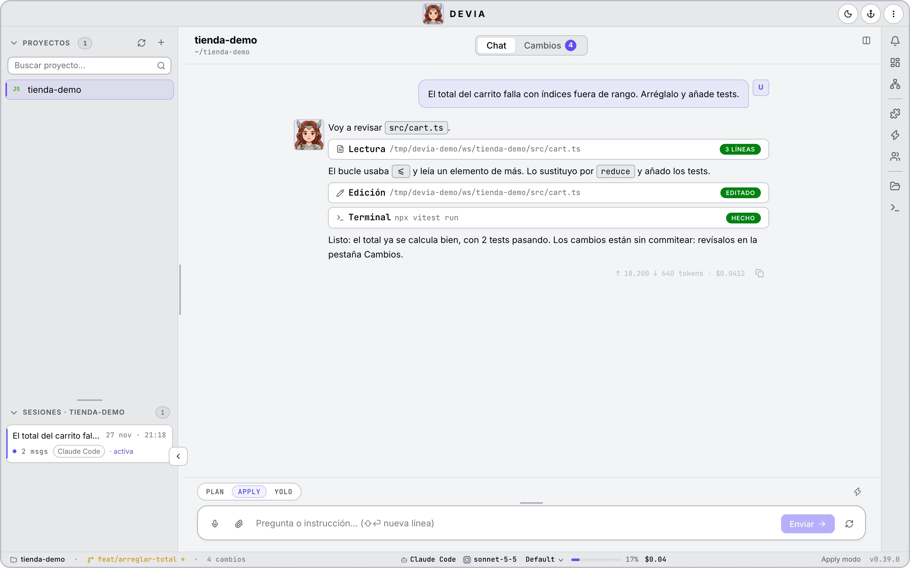

Os teus agentes de código numa janela
Uma app de secretária para dirigir Claude Code, Codex, Gemini e mais.

-
Agentes e execução
Trabalha com Claude Code, Codex, Gemini CLI, OpenCode, Cursor Agent, Copilot, Grok, Pi, Kimi, Hermes, Qwen, Qoder e DeepSeek, ou adiciona o teu se falar ACP. Muda de agente a meio da sessão e escolhe entre plan, apply e apply-yolo.

-
Contexto e memória
Memória persistente entre sessões, histórico por projeto, e contexto, custo e tokens à vista. Um grafo de código próprio dá ao agente a estrutura do projeto, e o code mode executa scripts só de leitura sobre os teus servidores MCP.

-
Método e planeamento
Um kanban por projeto que o próprio agente lê e atualiza, com specs, tarefas e dependências. O Devia Method orienta o trabalho, e os cartões interativos perguntam-te, pedem para aprovares planos ou reveres alterações, com qualquer agente.

-
Git e revisão
Estado do repositório, diffs em linha e mudança de ramo. Comenta linhas do diff e envia-as ao agente como revisão. Até quatro agentes em paralelo, cada um isolado no seu próprio git worktree.

-
Remoto e plataforma
Dirige os teus agentes a partir do Telegram, com envio de ficheiros, enquanto o Devia estiver aberto. Terminal integrado, Docker Compose e abertura no teu IDE, em Windows, macOS e Linux.

Tudo na tua máquina
- As tuas sessões, memória, kanban e configuração vivem no teu disco (
~/.devia-app/). - Sem contas nem nuvem do Devia.
- A única coisa que sai da tua máquina é o que o CLI de cada agente envia ao seu fornecedor.
Transfere o Devia Desktop
Grátis e de código aberto (Apache-2.0), com todas as funcionalidades.